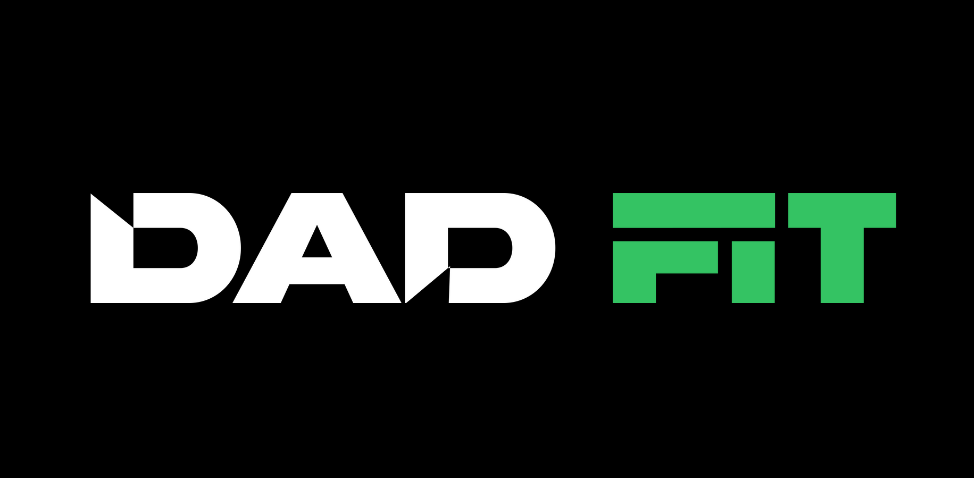

Slide 1 — A1 — Cover

01 / 09

BECOME THE
DAD YOUR
KIDS BRAG ABOUT
DAD YOUR
KIDS BRAG ABOUT
Kids don't brag about the dad who provided.
They brag about the dad who showed up strong.
They brag about the dad who showed up strong.
Swipe — this one's for you →
→